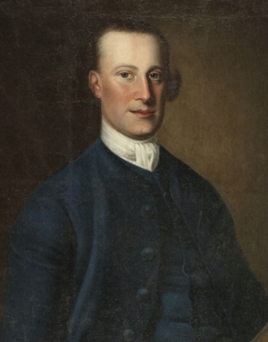
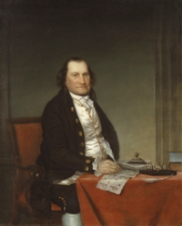

|
by Stefan Bielinski Abraham Ten Broeck was born in May 1734 - the eldest surviving son but a younger child of the large family of city father Dirck Ten Broeck and his wife Margarita Cuyler Ten Broeck. Young Abraham was sent to New York City to learn business in the house of his brother-in-law, Philip Livingston. Following the death of his father in 1751, the seventeen-year-old was sent to Europe to learn about international business and to absorb continental culture. By 1752, he had returned home to stay - residing in the family home at Market and Columbia Streets with his widowed mother. Capitalized by family assets, he prospered in trade - securing wood from upriver forests and cutting it into boards for export while importing a range of items to be sold from his riverside store. By the mid-1760s, he was one of the city's wealthiest businessmen with his Albany holdings including additional lots and buildings, storehouses, stables, a lumber yard, and the new dock on the north side of the city. In 1759, Abraham Ten Broeck was elected to the Albany city council from the third ward. He served as assistant and alderman for many years even though he was elected to represent Rensselaerswyck in the provincial Assembly in 1760. He was re-elected and served until the Assembly was dissolved in 1775. During that time, he gained a reputation as a supporter of American rights over British prerogatives!  In 1763, he married Elizabeth Van Rensselaer - the only daughter of the Patroon. Their family of five children (born between 1765 and 1779) was smaller than most - perhaps due to the ages of the parents. All were baptized in the Albany Dutch church where Abraham and Elizabeth were prominent members. Following the untimely death of his young brother-in-law in 1769, Abraham Ten Broeck was named CO-administrator of the Manor of Rensselaerswyck. He performed that service until his nephew, the young Patroon, came of age in 1784. Manor records show Ten Broeck was ambitious in signing up new tenants - who included overflow people from established early Albany families and a large number of recent émigrés as well. Many of these new leaseholders settled in the riverside area between the northern city line and the Manor House that came to be called "Watervliet." Businessman, landlord, and local leader, and provincial representative, Abraham Ten Broeck also was an active leader in the provincial militia - holding commissions since the 1750s. Just forty at the outbreak of hostilities in 1775, he was colonel of the Albany County Militia that became the home-based military agent of the Crusade for American Liberties. He ultimately held the rank of Brigadier General of the New York State Militia. Provincial Congresses Military career In 1779, he was appointed mayor of Albany on the death of John Barclay. He served until 1783 and again, following the death of Abraham Yates, Jr., from 1796 to 1798. post war career For thirty years, Abraham Ten Broeck was a prominent resident of Albany's third ward. In 1788, his townhouse was assessed on a par with Schuyler and Yates Mansions - the three highest in the city. In 1790, that home was attended by twelve servants. Following the destruction of his Market Street home in the fire of 1797, he began building a grand mansion on Arbor Hill - which then was technically out of the city and a part of Watervliet. His family moved there in 1798. In 1800, his household was configured on the Watervliet census and still included ten slaves. For all of that time, he also owned substantial properties both in and out of the city. He filed a will in March 1809. It left his substantial estate to his wife and then to their children and grandchildren. Albany city father Abraham Ten Broeck died on January 19, 1810 in his seventy-sixth year. His widow died in 1813.
Siblings: Abraham Ten Broeck's mother gave birth to twelve children between 1715 and 1738. The marriages of Abraham and six of his siblings further connected the fourth generation of this one-time New Netherland family in regional circles. Copy of a portrait by Thomas Mc Ilworth dated 1763 from the collection of the Albany Institute of History and Art. Also described in Ona Curran's Thomas McIlworth. This nifty obituary was printed in an Albany newspaper:  Died, Friday, Jan. 19, Gen. Abraham Ten Broeck, in the 76th year of his age. He was conspicuous for the ardent love of his country, in whose service he devoted his best days. His remains were buried with military honors, and attended by a large and very general concourse of his fellow-citizens. This fair-quality copy of an un-attributed and undated portrait of Abraham Ten Broeck hangs at Ten Broeck Mansion in Albany. We seek defining information on this legendary image. first posted 9/5/01; last revised 2/28/16 |